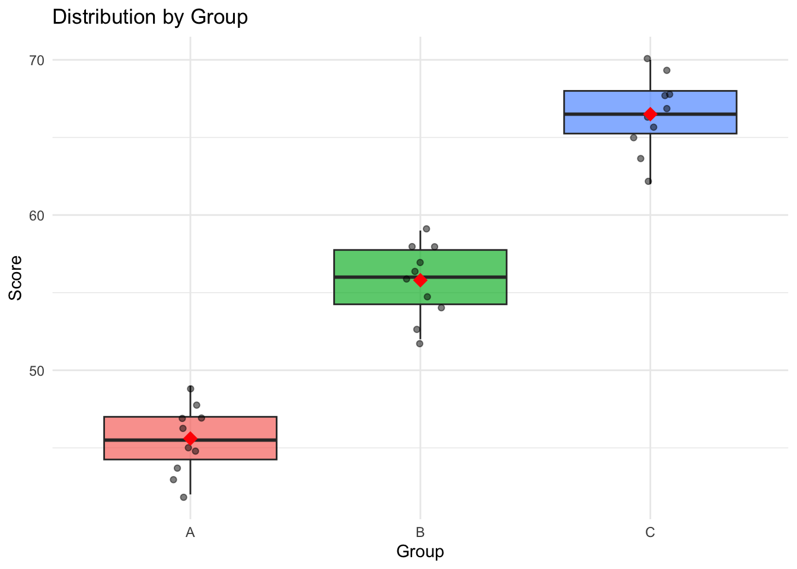

library(tidyverse)
library(effectsize)
library(emmeans) # For post-hoc comparisonsBoil in the Bag: One-Way ANOVA
Comparing three or more independent groups
Overview
Use this template when: You have three or more different groups of participants and want to compare their scores on a continuous outcome.
Example scenarios: - Comparing 3 teaching methods - Comparing 4 treatment conditions - Comparing performance across multiple sites
Step 1: Setup
Step 2: Load Your Data
# CHANGE THIS: Replace with your data file
data <- read_csv("data/oneway_anova_data.csv")
glimpse(data)Rows: 30
Columns: 5
$ id <dbl> 1, 2, 3, 4, 5, 6, 7, 8, 9, 10, 11, 12, 13, 14, 15, 16, 17, 18, …
$ age <dbl> 21, 22, 20, 23, 21, 22, 20, 24, 21, 22, 21, 22, 20, 23, 21, 22,…
$ gender <dbl> 1, 2, 1, 2, 1, 2, 1, 2, 1, 2, 1, 2, 1, 2, 1, 2, 1, 2, 1, 2, 1, …
$ group <chr> "A", "A", "A", "A", "A", "A", "A", "A", "A", "A", "B", "B", "B"…
$ score <dbl> 42, 45, 48, 44, 47, 43, 46, 49, 45, 47, 55, 58, 52, 56, 59, 54,…Step 3: Define Your Variables
# CHANGE THESE to your variable names
group_var <- "group" # Your grouping variable (3+ levels)
outcome_var <- "score" # Your outcome variable
# Convert to factor
data <- data |>
mutate(across(all_of(group_var), as.factor))
cat("Group levels:", levels(data[[group_var]]), "\n")Group levels: A B C cat("N per group:\n")N per group:table(data[[group_var]])
A B C
10 10 10 Step 4: Descriptive Statistics
descriptives <- data |>
group_by(.data[[group_var]]) |>
summarise(
n = n(),
mean = mean(.data[[outcome_var]], na.rm = TRUE),
sd = sd(.data[[outcome_var]], na.rm = TRUE),
se = sd / sqrt(n),
ci_lower = mean - 1.96 * se,
ci_upper = mean + 1.96 * se
)
print(descriptives)# A tibble: 3 × 7
group n mean sd se ci_lower ci_upper
<fct> <int> <dbl> <dbl> <dbl> <dbl> <dbl>
1 A 10 45.6 2.22 0.702 44.2 47.0
2 B 10 55.8 2.30 0.727 54.4 57.2
3 C 10 66.5 2.42 0.764 65.0 68.0Visualise the Data
ggplot(data, aes(x = .data[[group_var]], y = .data[[outcome_var]], fill = .data[[group_var]])) +
geom_boxplot(alpha = 0.7) +
geom_jitter(width = 0.1, alpha = 0.5) +
stat_summary(fun = mean, geom = "point", shape = 18, size = 4, color = "red") +
labs(
x = "Group",
y = "Score",
title = "Distribution by Group"
) +
theme_minimal() +
theme(legend.position = "none")
Step 5: Check Assumptions
Assumption 1: Normality (per group)
data |>
group_by(.data[[group_var]]) |>
summarise(
shapiro_W = shapiro.test(.data[[outcome_var]])$statistic,
shapiro_p = shapiro.test(.data[[outcome_var]])$p.value
)# A tibble: 3 × 3
group shapiro_W shapiro_p
<fct> <dbl> <dbl>
1 A 0.978 0.953
2 B 0.961 0.799
3 C 0.977 0.950Assumption 2: Homogeneity of Variance
library(car)
leveneTest(as.formula(paste(outcome_var, "~", group_var)), data = data)Levene's Test for Homogeneity of Variance (center = median)
Df F value Pr(>F)
group 2 0.0204 0.9798
27 Step 6: Run the One-Way ANOVA
# Run ANOVA
anova_model <- aov(as.formula(paste(outcome_var, "~", group_var)), data = data)
# Summary
summary(anova_model) Df Sum Sq Mean Sq F value Pr(>F)
group 2 2184.5 1092.2 204.1 <2e-16 ***
Residuals 27 144.5 5.4
---
Signif. codes: 0 '***' 0.001 '**' 0.01 '*' 0.05 '.' 0.1 ' ' 1Step 7: Effect Size
# Eta-squared and partial eta-squared
eta <- eta_squared(anova_model)
print(eta)# Effect Size for ANOVA
Parameter | Eta2 | 95% CI
-------------------------------
group | 0.94 | [0.90, 1.00]
- One-sided CIs: upper bound fixed at [1.00].# Omega-squared (less biased)
omega <- omega_squared(anova_model)
print(omega)# Effect Size for ANOVA
Parameter | Omega2 | 95% CI
---------------------------------
group | 0.93 | [0.89, 1.00]
- One-sided CIs: upper bound fixed at [1.00].Interpretation: η² = .01 (small), .06 (medium), .14 (large)
Step 8: Post-Hoc Comparisons
Only interpret if ANOVA is significant.
Tukey HSD
tukey_result <- TukeyHSD(anova_model)
print(tukey_result) Tukey multiple comparisons of means
95% family-wise confidence level
Fit: aov(formula = as.formula(paste(outcome_var, "~", group_var)), data = data)
$group
diff lwr upr p adj
B-A 10.2 7.634827 12.76517 0
C-A 20.9 18.334827 23.46517 0
C-B 10.7 8.134827 13.26517 0Using emmeans (more flexible)
# Estimated marginal means
emm <- emmeans(anova_model, specs = group_var)
print(emm) group emmean SE df lower.CL upper.CL
A 45.6 0.732 27 44.1 47.1
B 55.8 0.732 27 54.3 57.3
C 66.5 0.732 27 65.0 68.0
Confidence level used: 0.95 # Pairwise comparisons with Tukey adjustment
pairs(emm, adjust = "tukey") contrast estimate SE df t.ratio p.value
A - B -10.2 1.03 27 -9.859 <0.0001
A - C -20.9 1.03 27 -20.201 <0.0001
B - C -10.7 1.03 27 -10.342 <0.0001
P value adjustment: tukey method for comparing a family of 3 estimates Step 9: Summary of Results
# Extract ANOVA results
anova_summary <- summary(anova_model)[[1]]
cat("=== ONE-WAY ANOVA RESULTS ===\n\n")=== ONE-WAY ANOVA RESULTS ===cat("DESCRIPTIVES:\n")DESCRIPTIVES:for (i in 1:nrow(descriptives)) {
cat(sprintf(" %s: M = %.2f, SD = %.2f, n = %d\n",
descriptives[[group_var]][i],
descriptives$mean[i],
descriptives$sd[i],
descriptives$n[i]))
} A: M = 45.60, SD = 2.22, n = 10
B: M = 55.80, SD = 2.30, n = 10
C: M = 66.50, SD = 2.42, n = 10cat("\nANOVA RESULTS:\n")
ANOVA RESULTS:cat(sprintf(" F(%d, %d) = %.2f, p = %.3f\n",
anova_summary$Df[1],
anova_summary$Df[2],
anova_summary$`F value`[1],
anova_summary$`Pr(>F)`[1])) F(2, 27) = 204.09, p = 0.000cat(sprintf(" η² = %.3f\n", eta$Eta2[1])) η² = 0.938cat("\nPOST-HOC (Tukey HSD):\n")
POST-HOC (Tukey HSD):tukey_df <- as.data.frame(tukey_result[[1]])
for (i in 1:nrow(tukey_df)) {
cat(sprintf(" %s: diff = %.2f, p = %.3f\n",
rownames(tukey_df)[i],
tukey_df$diff[i],
tukey_df$`p adj`[i]))
} B-A: diff = 10.20, p = 0.000
C-A: diff = 20.90, p = 0.000
C-B: diff = 10.70, p = 0.000Step 10: APA Write-Up Template
NoteAPA Format
A one-way ANOVA was conducted to compare [OUTCOME] across [NUMBER] groups ([LIST GROUPS]). There was a [significant/non-significant] effect of [GROUP VARIABLE] on [OUTCOME], F(XX, XX) = XX.XX, p = .XXX, η² = .XX.
Post-hoc comparisons using Tukey’s HSD indicated that [GROUP A] (M = XX.XX, SD = XX.XX) was significantly different from [GROUP B] (M = XX.XX, SD = XX.XX), p = .XXX. [Continue for other significant comparisons…]